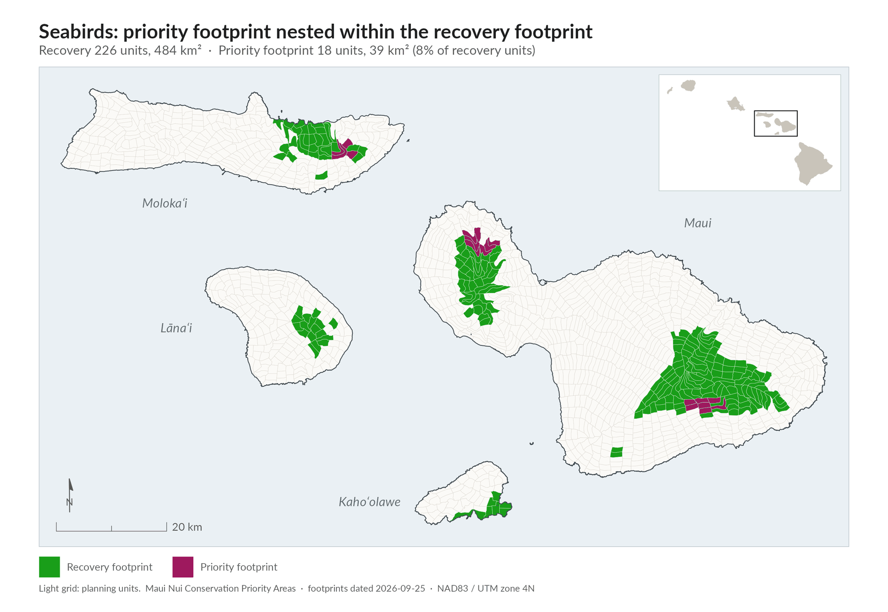
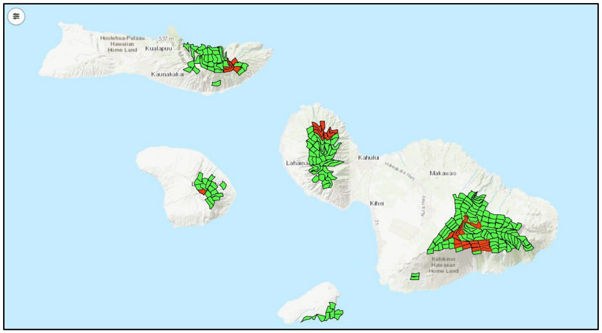

The species
At-risk seabirds in the MNLCPplan pp.37-38, Ch 6b ii and Table 9
| Hawaiian name | Common name | Scientific name | Status | Where it nests |
|---|---|---|---|---|
| ʻUaʻu | Hawaiian petrel | Pterodroma sandwichensis | Endangered (State and federal); endemic to Hawaiʻi | High-elevation dry habitat with little vegetation, often in lava crevices, and lower-elevation wet, dense native forest |
| ʻAʻo | Newell's shearwater | Puffinus newelli | Threatened (State and federal); endemic to Hawaiʻi | Colonies on steep mountain slopes in wet to mesic forest |
| ʻAkēʻakē | Band-rumped storm petrel | Oceanodroma castro | Hawaiʻi's distinct population segment is endangered (State and federal); indigenous | Natural cavities or burrows at many elevations; known breeding sites are now extremely rare |
All three have detailed, mapped conservation measures and identified areas for intensive management.plan p.37
Status and trends
Introduced mammalian predators, especially rats, mongoose and cats, together with habitat loss, have greatly reduced the abundance of Maui Nui seabirds.plan p.37, Ch 6b i Seabirds have a fairly low chance of persisting with no conservation action, but current conservation efforts already give them, along with Waterbirds, better than average persistence.plan p.40, Ch 6b vii
Current estimated breeding pairsplan p.38, Table 10
| Species | East Maui | West Maui | Molokaʻi | Lānaʻi | Kahoʻolawe | Total |
|---|---|---|---|---|---|---|
| ʻUaʻu (Hawaiian petrel) | 4,000 | 100-200 | 1-50 | 2,000 | 0 | 6,101-6,750 |
| ʻAʻo (Newell's shearwater) | 50-100 | 50-100 | 1-50 | 1-50 | 0 | 102-300 |
| ʻAkēʻakē (band-rumped storm petrel) | 50-100 | 50-100 | 1-50 | 50-100 | 0 | 151-350 |
Threats
- Introduced predators. Rats, mongoose and cats prey on nesting seabirds.plan p.37
- Habitat loss. Loss of nesting habitat has contributed to the decline.plan p.37
- Infrastructure. Artificial lights at night, power lines, wind turbines and roads harm seabird survival.plan p.37
Emergency actions
No seabirds are currently considered to face an imminent threat of extinction, so no emergency actions are listed for this group.plan p.38, Ch 6b iv; p.21, Table 2
Recovery strategy
Goals
The plan aims to roughly double ʻuaʻu breeding pairs and to raise ʻakēʻakē and ʻaʻo numbers by an order of magnitude.plan p.38, Ch 6b v The targets are spread across East Maui, West Maui, Molokaʻi, Lānaʻi and Kahoʻolawe.
Recovery targets (breeding pairs)plan p.39, Table 11
| Species | East Maui | West Maui | Molokaʻi | Lānaʻi | Kahoʻolawe | Total |
|---|---|---|---|---|---|---|
| ʻUaʻu (Hawaiian petrel) | 8,000 | 4,000 | 1,000 | 4,000 | 1,000 | 18,000 |
| ʻAʻo (Newell's shearwater) | 1,000 | 800 | 600 | 600 | 600 | 3,600 |
| ʻAkēʻakē (band-rumped storm petrel) | 500 | 400 | 300 | 300 | 300 | 1,800 |
Recovery footprint and priority footprint
Seabirds followed the plan's expert-led pathway. Like the Forest Bird Team, the Seabird Team used published literature, recovery plans and professional expertise to map the recovery footprint needed to sustain seabird populations on all four Maui Nui islands.plan p.39, Ch 6b vi Offshore islets are part of the recovery footprint, even where they are too small to show on the map. A subset of planning units (areas of about 2 km² used to organize the plan's maps) was chosen as the priority area for conservation action.plan p.39; planning unit size p.52 In the plan's map, the priority area and the initial implementation area are the same.plan p.39, Figure 7 caption

Map as printed in the plan (Figure 7)Details

How the seabird footprint was delineatedDetails
- Pathway. Seabirds followed the expert-led pathway: specialists delineated priority areas directly through repeated collaborative review rather than algorithmic footprint generation. The plan uses this pathway for groups with few focal species and strong existing expert knowledge.plan App 1 p.A1-5
- Review process. DOFAW coordinated the taxon expert team. Seabird specialists reviewed species data and draft recovery areas in the Expert Data Platform over several rounds of map edits. The resulting recovery areas include updated occurrence data, predator-proof fence locations and expert-set targets (Leopold et al. in prep.).plan App 1 p.A1-5
- Planning process. Expert determination of species at risk, species facing imminent extinction, management needs and emergency action locations, recovery goals, the recovery footprint, the priority footprint and the order of conservation strategies.plan p.37
- Additional starting areas. The plan lists 11 more planning units where seabird conservation actions can begin: 3047, 3052, 3053, 4019, 4020, 4021, 4067, 6017, 6195, 6208 and 6209.plan p.39
- Viewing. The footprint can be viewed alone or with other groups' footprints in the Adaptive Conservation Planner (Conservation Planner).plan App 1 p.A1-5
Priority conservation actions
The plan's action prioritization used a modified Priority Threat Management (PTM) process. PTM estimates how much each of 27 strategies would raise the chance that each species group persists over 20 years.plan p.84, Ch 6j Like Forest birds, Seabirds gain the most from the bird-focused combination strategy S27.plan p.40 Experts ranked predator control actions, such as fencing and predator removal, as the actions to do first. Programs that rescue injured birds, and habitat management, are also high priorities.plan p.40
Recommended order of S27 actions for seabirdsplan p.40, Table 12; values match App 2 p.A2-15, Table 1
| Order | Strategy | What it involves | Persistence on its own (%) |
|---|---|---|---|
| 1 | S10 | New predator-proof fencing (against rodents, mongoose and cats) | 48 |
| 2 | S7 | Invasive vertebrate predator control (rats, cats, dogs, mongoose, barn owls, cattle egrets, rabbits) | 46 |
| 3 | S17 | Vertebrate health and rehabilitation | 35 |
| High | S11 | Landscape-scale rat suppression | 42 |
| High | S16 | Minimizing and modifying infrastructure (less lighting, modified power lines and wind turbines, fewer road kills) | 38 |
| High | S2 | Existing ungulate fencing | 32 |
| High | S9 | Existing predator-proof fencing | 31 |
| High | S3 | Future ungulate fencing | 30 |
| High | S5 | Terrestrial habitat management for at-risk species | 29 |
New predator-proof fencing is expected to make the greatest contribution to seabird recovery.plan p.37 summary If all S27 actions are implemented, Seabirds are expected to have a 59 percentplan p.85, Table 26; App 2 p.A2-15; Table 12 caption on p.40 gives 58 chance of persisting through the 20-year timeframe. If all actions succeed, persistence is very high (69 percent).plan p.40
Seabirds do not depend on research or unproven future technologies to reach a 50 percent chance of persistence. The tools they need exist today.plan p.86, Ch 6j
PTM results for seabirds in more detailDetails
Expected 20-year persistence for seabirds under selected scenariosplan p.85, Table 26; App 2 p.A2-15, Table 1; p.40
| Scenario | Persistence (%) |
|---|---|
| No action | 17 |
| Current actions only | 36 |
| S10 new predator-proof fencing, alone | 48 |
| S22 to S24 (combinations of predator control, ungulate control and habitat management) | 50 to 54 |
| S27 bird-focused combination, adjusted for feasibility | 59 |
| All actions implemented and effective | 69 |
- New predator-proof fences alone (S10) bring Seabirds to about 50 percent. Persistence goes above 50 percent under combinations of predator control, ungulate control and habitat management (S22 to S26).plan App 2 p.A2-9
- What S10 includes for seabirds: build and maintain two new predator-proof fences per year for 10 years (20 fences in all)plan App 2 p.A2-33, each supporting 500 adult nesting seabirds, with yearly maintenance and traps and bait boxes for rats, mice, mongoose and cats inside.plan App 2 p.A2-33, Table 2
- What S9 includes for seabirds: maintaining existing predator-proof fences; translocating seabird chicks into existing fences; using social attraction to encourage adults to nest inside the fences; and yearly surveys of recruitment.plan App 2 p.A2-32, Table 2
- What S16 includes: legislation and outreach to reduce night lighting; power line diverters with Hawaiian Electric; wind turbine changes in areas set by Habitat Conservation Plans; speed bumps within Haleakalā to reduce car strikes; and staff to review and update Habitat Conservation Plans.plan App 2 p.A2-35, Table 2
- What S17 includes: support for the Hawaii Wildlife Center on Hawaiʻi Island to transport and care for injured Maui Nui birds, and satellite rehabilitation facilities on Maui and Molokaʻi.plan App 2 pp.A2-35 to A2-36, Table 2
- Predator-proof fences are described as critical to preventing extinctions of Seabirds, Waterbirds and Terrestrial snails.plan App 2 p.A2-16
Monitoring and research needs
- Recruitment surveys. The fencing strategies include yearly surveys to measure how many translocated or socially attracted birds join fenced colonies.plan App 2 pp.A2-32 to A2-33, Table 2
- Indirect indicators. The plan gives burrow counts as an example of an indirect indicator for seabird monitoring.plan Ch 8, p.106
- Ungulate fencing and habitat work. Existing and future ungulate fencing (S2, S3) and terrestrial habitat management (S5) are also high-priority supporting actions.plan p.40, Table 12
Island by island
- East Maui. The largest current ʻuaʻu colony (about 4,000 pairsplan p.38, Table 10). Targets: 8,000 ʻuaʻu, 1,000 ʻaʻo and 500 ʻakēʻakē pairs.plan p.39, Table 11
- West Maui. Currently 100-200 ʻuaʻu pairs. Targets: 4,000 ʻuaʻu, 800 ʻaʻo and 400 ʻakēʻakē pairs.plan pp.38-39, Tables 10-11
- Molokaʻi. Currently 1-50 pairs of each species. Targets: 1,000 ʻuaʻu, 600 ʻaʻo and 300 ʻakēʻakē pairs.plan pp.38-39, Tables 10-11
- Lānaʻi. About 2,000 ʻuaʻu pairs today. Targets: 4,000 ʻuaʻu, 600 ʻaʻo and 300 ʻakēʻakē pairs.plan pp.38-39, Tables 10-11
- Kahoʻolawe. No breeding pairs today. Targets: 1,000 ʻuaʻu, 600 ʻaʻo and 300 ʻakēʻakē pairs.plan pp.38-39, Tables 10-11 S11 includes removing rodents from the whole island, and S7 includes removing cats from it.plan App 2 pp.A2-31 to A2-33, Table 2
- Offshore islets. Included in the recovery footprint.plan p.39 S7 includes keeping offshore islets free of rodents.plan App 2 p.A2-31